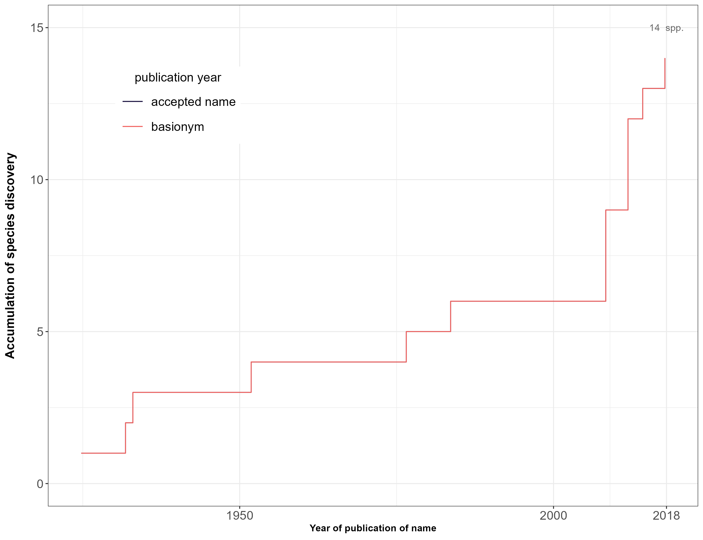
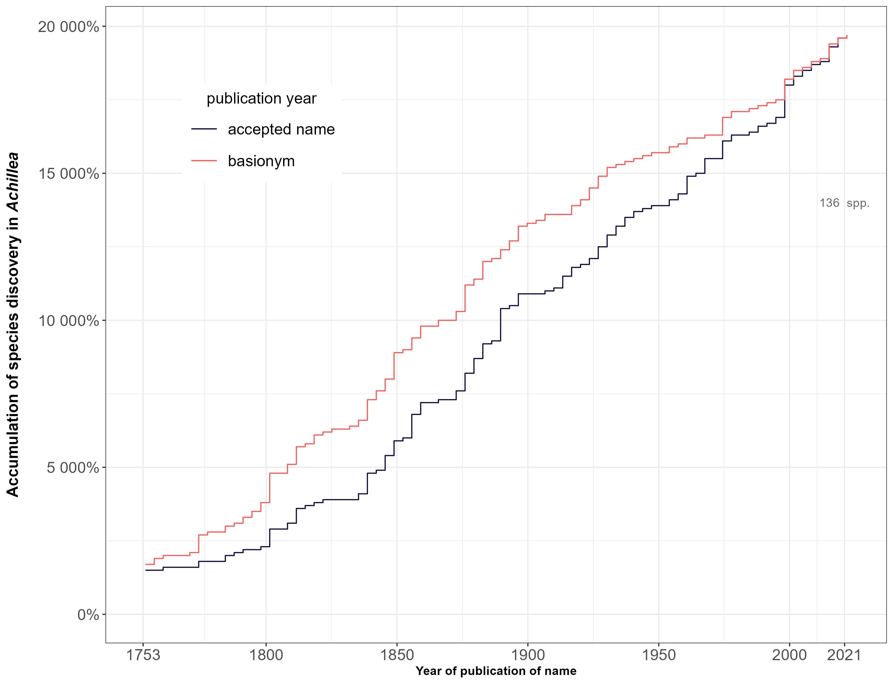
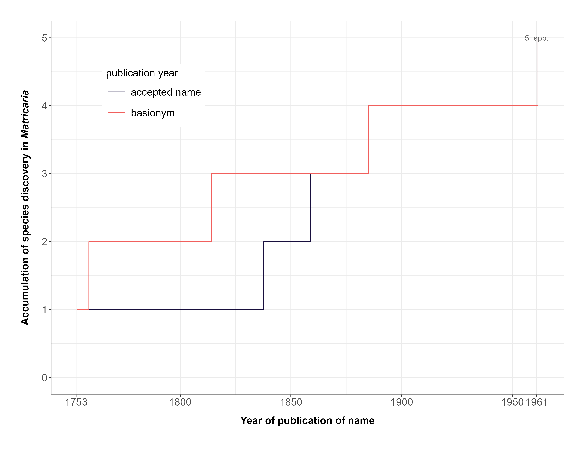
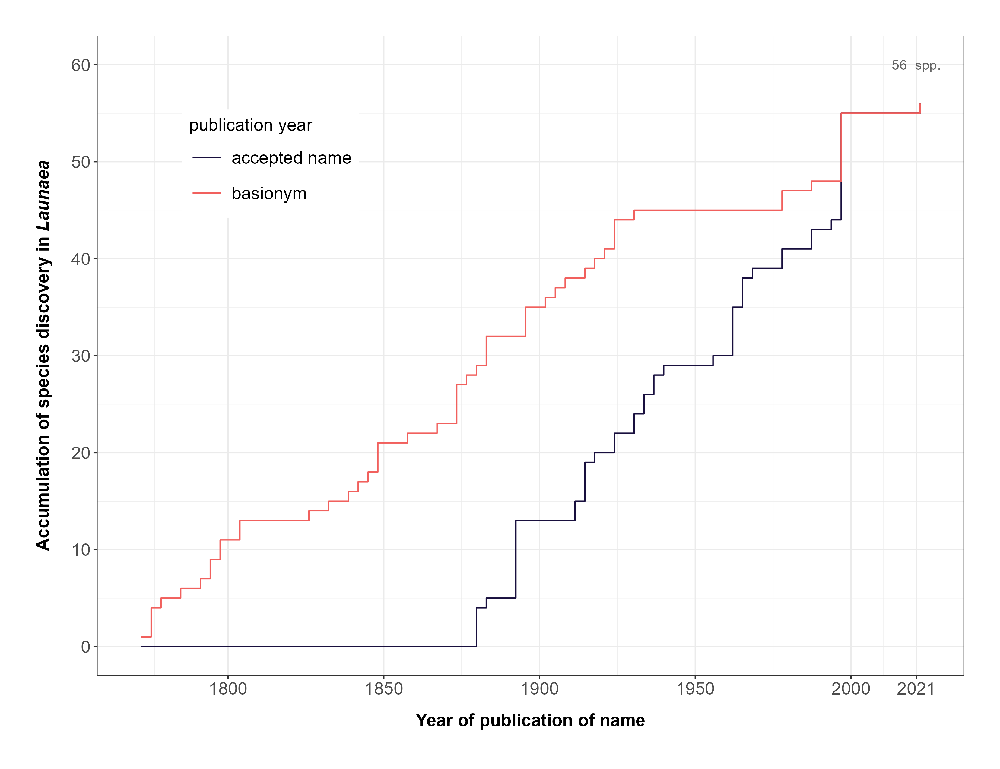

Information concerning the year of publication of a species and its
current status, obtained from the taxonomically validated Plants of the
World Online (POWO) database, can offer valuable insights into temporal
trends related to changes in species nomenclature.
In this article, we illustrate the utilization of the package’s
accGraph function for automatically generate plots that
showcase the dynamics of species discoveries and nomenclatural changes
over time – all in a single run! This versatile function is capable of
producing two distinct types of graphics: one depicting the accumulation
of formally described species within each genus or family, and the other
illustrating changes in species nomenclature over time. The species
discovery curve inherently demonstrates continuous growth, with the rate
of this growth linked to the number of new discoveries - and this one is
the focus of this article. To employ this function effectively, it is
necessary to have data stored in a spreadsheet or dataset generated
using the powoSpecies function, where the
synonyms argument is set to TRUE.
Setup
Install the latest developmental version of expowo from GitHub:
#install.packages("devtools")
devtools::install_github("DBOSlab/expowo")1. Plotting the species discoveries for one genus
The example below shows the accumulation curve of Luetzelburgia, one
legume genus. The black line is derived from the publication dates of
currently accepted species names, while the red line is related to the
publication year of the basionym for each accepted species name. As a
result, it illustrates the cumulative count of formally described
species of this genus. Different file formats (e.g. JPG, PDF, PNG, TIFF)
are also supported by setting the argument format. Notice
that the spp_changes_col argument is set with the name of
the column (in this case, “genus”) of the input dataframe that we want
to be used for plotting the graphic. If we defined it as “family”, for
example, the function would use the data of the entire family available
in the input dataframe to create the graphic.
accGraph(inputdf = "Luetzelburgia_spp",
verbose = TRUE,
spp_acc = TRUE,
spp_changes = TRUE,
spp_changes_col = "genus",
genus_plots = FALSE,
save = TRUE,
dir = "results_accGraph",
filename = "cumulative_discovery_Luetzelburgia",
format = "jpg")
FIGURE 1. Accumulation of formally described species in the big genus Luetzelburgia over time.
The accumulation curve of Luetzelburgia shows that it has 14 spp. described and a high increase of taxonomic changes in 2008 (noticeable by the curve in light red).
2. Plotting the species discoveries for the entire dataset
If your dataset contains species from more than one genus, the
accGraph function can automatically plot a graphic of
changes in species nomenclature over the years with the data of those
genera.
First, to get those graphs, we extracted all data of the genera
Achillea, Matricaria and Launaea from Plants
of the World Online using powoSpecies as follows:
newdata <- powoSpecies(family = "Asteraceae",
genus = c("Achillea", "Matricaria", "Launaea"),
synonyms = TRUE,
save = FALSE,
dir = "Asteraceae_results",
filename = "Asteraceae_spp")Then, we used the newly developed function accGraph to
plot individual graphics of accumulation of species discovery and a
violin graph for the three genera.
accGraph(inputdf = newdata,
verbose = TRUE,
spp_acc = TRUE,
spp_changes = FALSE,
spp_changes_col = "genus",
genus_plots = TRUE,
save = TRUE,
dir = "results_accGraph",
filename = "cumulative_discovery_Asteraceae_",
format = "jpg")
FIGURE 2. Accumulation of formally described species in the genus Achillea over time.

FIGURE 3. Accumulation of formally described species in the genus Matricaria over time.

FIGURE 4. Accumulation of formally described species in the genus Launaea over time.